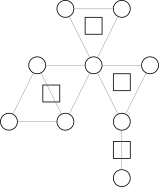

圆方树
在阅读下列内容之前，请务必了解 图论相关概念 部分。
相关阅读：割点和桥。
引入
众所周知，树（或森林）有很好的性质，并且容易通过很多常见数据结构维护。
而一般图则没有那么好的性质，所幸有时我们可以把一般图上的某些问题转化到树上考虑。
而圆方树（Block forest 或 Round-square tree）1就是一种将图变成树的方法。本文将介绍圆方树的构建，性质和一些应用。
限于篇幅，本文中有一些结论未经证明，读者可以自行理解或证明。
定义
圆方树最初是处理「仙人掌图」（每条边在不超过一个简单环中的无向图）的一种工具，不过发掘它的更多性质，有时我们可以在一般无向图上使用它。
要介绍圆方树，首先要介绍 点双连通分量。
一个 点双连通图 的一个定义是：图中任意两不同点之间都有至少两条点不重复的路径。
点不重复既指路径上点不重复（简单路径），也指两条路径的交集为空（当然，路径必然都经过出发点和到达点，这不在考虑范围内）。
可以发现对于只有一个点的图比较难定义它是不是一个点双，这里先不考虑节点数为
一个近乎等价的定义是：不存在割点的图。
这个定义只在图中只有两个点，一条连接它们的边时失效。它没有割点，但是并不能找到两条不相交的路径，因为只有一条路径。
（也可以理解为那一条路径可以算两次，的确没有交，因为不经过其他点）
虽然原始的定义的确是前者，但是为了方便，我们规定点双图的定义采用后者。
而一个图的 点双连通分量 则是一个 极大点双连通子图。
与强连通分量等不同，一个点可能属于多个点双，但是一条边属于恰好一个点双（如果定义采用前者则有可能不属于任何点双）。
在圆方树中，原来的每个点对应一个 圆点，每一个点双对应一个 方点。
所以共有
而对于每一个点双连通分量，它对应的方点向这个点双连通分量中的每个点连边。
每个点双形成一个「菊花图」，多个「菊花图」通过原图中的割点连接在一起（因为点双的分隔点是割点）。
显然，圆方树中每条边连接一个圆点和一个方点。
下面的图显示了一张图对应的点双和圆方树形态。2

圆方树的点数小于
其实，如果原图连通，则「圆方树」才是一棵树，如果原图有
如果原图中某个连通分量只有一个点，则需要具体情况具体分析，我们在后续讨论中不考虑孤立点。
过程
对于一个图，如何构造出它的圆方树呢？首先可以发现如果图不连通，可以拆分成每个连通子图考虑，所以我们只考虑连通图。
因为圆方树是基于点双连通分量的，而点双连通分量又基于割点，所以只需要用类似求割点的方法即可。
求割点的常用算法是 Tarjan 算法，如果你会了理解下面的内容就很简单了，如果你不会也没关系。
我们跳过 Tarjan 求割点，直接介绍圆方树使用的算法（其实是 Tarjan 的变体）：
对图进行 DFS，并且中间用到了两个关键数组 dfn 和 low（类似于 Tarjan）。
dfn[u] 存储的是节点
low[u] 存储的是节点
如果没有听说过 Tarjan 算法可能会有点难理解，让我们举个例子吧：
（可以发现这张图其实和上面图片中的图等价）
这里树边从上至下用直线画出，返祖边从下至上用曲线画出。节点的编号便是它的 DFS 序。
则有 low 数组如下：
并不是很难理解吧，注意这里 low 是
我们可以很容易地写出计算 dfn 和 low 的 DFS 函数（初始时 dfn 数组清零）：
实现
接下来，我们考虑点双和 DFS 树以及这两个数组之间的关联。
可以发现，每个点双在 DFS 树上是一棵连通子树，并至少包含两个点；特别地，最顶端节点仅往下接一个点。
同时还可以发现每条树边恰好在一个点双内。
我们考虑一个点双在 DFS 树中的最顶端节点
因为至少有两个点，考虑这个点双的下一个点
不难发现，此时一定有
更准确地说，对于一条树边
那么我们可以在 DFS 的过程中确定哪些地方存在点双，但是还不能准确确定一个点双所包含的点集。
这并不难处理，我们可以在 DFS 过程中维护一个栈，存储还未确定所属点双（可能有多个）的节点。
在找到点双时，点双中除了
当然，我们可以同时处理被弹出的节点，只要将其和新建的方点连边即可。最后还要让
这样就很自然地完成了圆方树的构建，我们可以给方点标号为
这部分可能讲述得不够清晰，下面贴出一份代码，附有详尽注释以及帮助理解的输出语句和一份样例，建议读者复制代码并自行实践理解，毕竟代码才是最能帮助理解的（不要忘记开 c++11）。
实现
#include <algorithm>
#include <cstdio>
#include <vector>
constexpr int MN = 100005;
int N, M, cnt;
std::vector<int> G[MN], T[MN * 2];
int dfn[MN], low[MN], dfc;
int stk[MN], tp;
void Tarjan(int u) {
printf(" Enter : #%d\n", u);
low[u] = dfn[u] = ++dfc; // low 初始化为当前节点 dfn
stk[++tp] = u; // 加入栈中
for (int v : G[u]) { // 遍历 u 的相邻节点
if (!dfn[v]) { // 如果未访问过
Tarjan(v); // 递归
low[u] = std::min(low[u], low[v]); // 未访问的和 low 取 min
if (low[v] == dfn[u]) { // 标志着找到一个以 u 为根的点双连通分量
++cnt; // 增加方点个数
printf(" Found a New BCC #%d.\n", cnt - N);
// 将点双中除了 u 的点退栈，并在圆方树中连边
for (int x = 0; x != v; --tp) {
x = stk[tp];
T[cnt].push_back(x);
T[x].push_back(cnt);
printf(" BCC #%d has vertex #%d\n", cnt - N, x);
}
// 注意 u 自身也要连边（但不退栈）
T[cnt].push_back(u);
T[u].push_back(cnt);
printf(" BCC #%d has vertex #%d\n", cnt - N, u);
}
} else
low[u] = std::min(low[u], dfn[v]); // 已访问的和 dfn 取 min
}
printf(" Exit : #%d : low = %d\n", u, low[u]);
printf(" Stack:\n ");
for (int i = 1; i <= tp; ++i) printf("%d, ", stk[i]);
puts("");
}
int main() {
scanf("%d%d", &N, &M);
cnt = N; // 点双 / 方点标号从 N 开始
for (int i = 1; i <= M; ++i) {
int u, v;
scanf("%d%d", &u, &v);
G[u].push_back(v); // 加双向边
G[v].push_back(u);
}
// 处理非连通图
for (int u = 1; u <= N; ++u)
if (!dfn[u]) Tarjan(u), --tp;
// 注意到退出 Tarjan 时栈中还有一个元素即根，将其退栈
return 0;
}
提供一个测试用例：
这个例子对应的图（包含了重边和孤立点的情况）：

例题
我们讲一些可以使用圆方树求解的例题。
「APIO2018」铁人两项
题意简述
给定一张简单无向图，问有多少对三元组
题解
说到简单路径，就必须提一个关于点双很好的性质：对于一个点双中的两点，它们之间简单路径的并集，恰好完全等于这个点双。
即同一个点双中的两不同点
这个性质的证明：
- 显然如果简单路径出了点双，就不可能再回到这个点双中，否则会和点双的定义冲突。
- 所以我们只需考虑证明一个点双连通图中任意三不同点
，必存在一条从 到 的简单路径经过 。 - 首先排除点数为
的情况，它满足这个性质，但是无法取出 个不同点。 - 对于余下的情况，考虑建立网络流模型，源点向
连容量为 的边， 和 向汇点连容量为 的边。 - 原图中的双向边
，变成 向 连一条容量为 的边， 也向 连一条容量为 的边。 - 最后，给除了源点，汇点和
之外的每个点赋上 的容量，这可以通过拆点实现。 - 因为源点到
的边的容量为 ，那么如果这个网络最大流为 ，则证明一定有路径经过 。 - 考虑最大流最小割定理，显然最小割小于等于
，接下来只要证最小割大于 。 - 这等价于证明割掉任意一条容量为
的边，是无法使源点和汇点不连通的。 - 考虑割掉
或 与汇点连接的点，根据点双的第一种定义，必然存在简单路径从 到另一个没割掉的点。 - 考虑割掉一个节点拆点形成的边，这等价于删除一个点，根据点双的第二种定义，余下的图仍然连通。
- 考虑割掉一条由原先的边建出的边，这等价于删除一条边，这比删除一个点更弱，显然存在路径。
- 所以我们证明了最小割大于
，即最大流等于 。证毕。
这个结论能告诉我们什么呢？它告诉了我们：考虑两圆点在圆方树上的路径，与路径上经过的方点相邻的圆点的集合，就等于原图中两点简单路径上的点集。
回到题目，考虑固定
那么，对原图建出圆方树后，两点之间简单路径的点数，就和它们在圆方树上路径经过的方点（点双）和圆点的个数有关。
接下来是圆方树的一个常用技巧：路径统计时，点赋上合适的权值。
本题中，每个方点的权值为对应点双的大小，而每个圆点权值为
这样赋权后则有两圆点间圆方树上路径点权和，恰好等于原图中简单路径并集大小减
问题转化为统计圆方树上
换个角度考虑，改为统计每一个点对答案的贡献，即权值乘以经过它的路径条数，这可以通过简单的树形 DP 求出。
最后，不要忘记处理图不连通的情况。下面是对应代码：
参考代码
#include <algorithm>
#include <iostream>
#include <vector>
constexpr int MN = 100005;
int N, M, cnt;
std::vector<int> G[MN], T[MN * 2];
long long Ans;
int dfn[MN], low[MN], dfc, num;
int stk[MN], tp;
int wgh[MN * 2];
void Tarjan(int u) { // 求点双
low[u] = dfn[u] = ++dfc;
stk[++tp] = u;
++num;
for (int v : G[u]) {
if (!dfn[v]) {
Tarjan(v);
low[u] = std::min(low[u], low[v]);
if (low[v] == dfn[u]) {
wgh[++cnt] = 0;
for (int x = 0; x != v; --tp) {
x = stk[tp];
T[cnt].push_back(x);
T[x].push_back(cnt);
++wgh[cnt];
}
T[cnt].push_back(u);
T[u].push_back(cnt);
++wgh[cnt];
}
} else
low[u] = std::min(low[u], dfn[v]);
}
}
int vis[MN * 2], siz[MN * 2];
void DFS(int u, int fz) { // dfs求值
vis[u] = 1;
siz[u] = (u <= N);
for (int v : T[u])
if (v != fz) {
DFS(v, u);
Ans += 2ll * wgh[u] * siz[u] * siz[v];
siz[u] += siz[v];
}
Ans += 2ll * wgh[u] * siz[u] * (num - siz[u]);
}
using std::cin;
using std::cout;
int main() {
cin.tie(nullptr)->sync_with_stdio(false);
cin >> N >> M;
for (int u = 1; u <= N; ++u) wgh[u] = -1;
cnt = N;
for (int i = 1; i <= M; ++i) {
int u, v;
cin >> u >> v;
G[u].push_back(v);
G[v].push_back(u);
}
for (int u = 1; u <= N; ++u)
if (!dfn[u]) {
num = 0;
Tarjan(u), --tp;
DFS(u, 0);
}
cout << Ans << '\n';
return 0;
}
顺带一提，刚刚的测试用例在这题的答案是
Codeforces #487 E. Tourists
题意简述
给定一张简单无向连通图，要求支持两种操作：
- 修改一个点的点权。
- 询问两点之间所有简单路径上点权的最小值。
题解
同样地，我们建出原图的圆方树，令方点权值为相邻圆点权值的最小值，问题转化为求路径上最小值。
路径最小值可以使用树链剖分和线段树维护，但是修改呢？
一次修改一个圆点的点权，需要修改所有和它相邻的方点，这样很容易被卡到
这时我们利用圆方树是棵树的性质，令方点权值为自己的儿子圆点的权值最小值，这样的话修改时只需要修改父亲方点。
对于方点的维护，只需要对每个方点开一个 multiset 维护权值集合即可。
需要注意的是查询时若 LCA 是方点，则还需要查 LCA 的父亲圆点的权值。
注意：圆方树点数要开原图的两倍，否则会数组越界。
参考代码
#include <algorithm>
#include <iostream>
#include <set>
#include <vector>
constexpr int MN = 100005;
constexpr int MS = 524288;
constexpr int Inf = 0x7fffffff;
int N, M, Q, cnt;
int w[MN * 2];
std::vector<int> G[MN], T[MN * 2];
std::multiset<int> S[MN * 2];
int dfn[MN * 2], low[MN], dfc;
int stk[MN], tp;
void Tarjan(int u) {
low[u] = dfn[u] = ++dfc;
stk[++tp] = u;
for (int v : G[u]) {
if (!dfn[v]) {
Tarjan(v);
low[u] = std::min(low[u], low[v]);
if (low[v] == dfn[u]) {
++cnt;
for (int x = 0; x != v; --tp) {
x = stk[tp];
T[cnt].push_back(x);
T[x].push_back(cnt);
}
T[cnt].push_back(u);
T[u].push_back(cnt);
}
} else
low[u] = std::min(low[u], dfn[v]);
}
}
int idf[MN * 2], faz[MN * 2], siz[MN * 2], dep[MN * 2], son[MN * 2],
top[MN * 2];
void DFS0(int u, int fz) {
faz[u] = fz, dep[u] = dep[fz] + 1, siz[u] = 1;
for (int v : T[u])
if (v != fz) {
DFS0(v, u);
siz[u] += siz[v];
if (siz[son[u]] < siz[v]) son[u] = v;
}
}
void DFS1(int u, int fz, int tp) {
dfn[u] = ++dfc, idf[dfc] = u, top[u] = tp;
if (son[u]) DFS1(son[u], u, tp);
for (int v : T[u])
if (v != fz && v != son[u]) DFS1(v, u, v);
}
#define li (i << 1)
#define ri (i << 1 | 1)
#define mid ((l + r) >> 1)
#define ls li, l, mid
#define rs ri, mid + 1, r
int dat[MS];
void Build(int i, int l, int r) { // 建树
if (l == r) {
dat[i] = w[idf[l]];
return;
}
Build(ls), Build(rs);
dat[i] = std::min(dat[li], dat[ri]);
}
void Mdf(int i, int l, int r, int p, int x) { // 获取最小值
if (l == r) {
dat[i] = x;
return;
}
if (p <= mid)
Mdf(ls, p, x);
else
Mdf(rs, p, x);
dat[i] = std::min(dat[li], dat[ri]);
}
int Qur(int i, int l, int r, int a, int b) { // 查询
if (r < a || b < l) return Inf;
if (a <= l && r <= b) return dat[i];
return std::min(Qur(ls, a, b), Qur(rs, a, b));
}
using std::cin;
using std::cout;
int main() {
cin.tie(nullptr)->sync_with_stdio(false);
cin >> N >> M >> Q;
for (int i = 1; i <= N; ++i) cin >> w[i];
cnt = N;
for (int i = 1; i <= M; ++i) {
int u, v;
cin >> u >> v;
G[u].push_back(v);
G[v].push_back(u);
}
Tarjan(1), DFS0(1, 0), dfc = 0, DFS1(1, 0, 1);
for (int i = 1; i <= N; ++i)
if (faz[i]) S[faz[i]].insert(w[i]);
for (int i = N + 1; i <= cnt; ++i) w[i] = *S[i].begin();
Build(1, 1, cnt);
for (int q = 1; q <= Q; ++q) {
char opt[3];
int x, y;
cin >> opt >> x >> y;
if (*opt == 'C') {
Mdf(1, 1, cnt, dfn[x], y);
if (faz[x]) {
int u = faz[x];
S[u].erase(S[u].lower_bound(w[x]));
S[u].insert(y);
if (w[u] != *S[u].begin()) {
w[u] = *S[u].begin();
Mdf(1, 1, cnt, dfn[u], w[u]);
}
}
w[x] = y;
} else {
int Ans = Inf;
while (top[x] != top[y]) {
if (dep[top[x]] < dep[top[y]]) std::swap(x, y);
Ans = std::min(Ans, Qur(1, 1, cnt, dfn[top[x]], dfn[x]));
x = faz[top[x]];
}
if (dfn[x] > dfn[y]) std::swap(x, y);
Ans = std::min(Ans, Qur(1, 1, cnt, dfn[x], dfn[y]));
if (x > N) Ans = std::min(Ans, w[faz[x]]);
cout << Ans << '\n';
}
}
return 0;
}
「SDOI2018」战略游戏
题意简述
给出一个简单无向连通图。有
每次给出一个点集
每个测试点有多组数据。
题解
先建出圆方树，则变为询问
如何计算连通子图中的圆点个数？有一个方法：
把圆点的权值放到它和它的父亲方点的边上，问题转化为求边权和，这个问题可以参考 「SDOI2015」寻宝游戏 的一种解法。
即把
最后，如果子图中的深度最浅的节点是圆点，答案还要加上
因为有多组数据，要注意初始化数组。
参考代码
#include <algorithm>
#include <iostream>
#include <vector>
constexpr int MN = 100005;
int N, M, Q, cnt;
std::vector<int> G[MN], T[MN * 2];
int dfn[MN * 2], low[MN], dfc;
int stk[MN], tp;
void Tarjan(int u) { // 求点双，准备建树
low[u] = dfn[u] = ++dfc;
stk[++tp] = u;
for (int v : G[u]) {
if (!dfn[v]) {
Tarjan(v);
low[u] = std::min(low[u], low[v]);
if (low[v] == dfn[u]) {
++cnt;
for (int x = 0; x != v; --tp) {
x = stk[tp];
T[cnt].push_back(x);
T[x].push_back(cnt);
}
T[cnt].push_back(u);
T[u].push_back(cnt);
}
} else
low[u] = std::min(low[u], dfn[v]);
}
}
int dep[MN * 2], faz[MN * 2][18], dis[MN * 2];
void DFS(int u, int fz) {
dfn[u] = ++dfc;
dep[u] = dep[faz[u][0] = fz] + 1;
dis[u] = dis[fz] + (u <= N);
for (int j = 0; j < 17; ++j) faz[u][j + 1] = faz[faz[u][j]][j];
for (int v : T[u])
if (v != fz) DFS(v, u);
}
int LCA(int x, int y) { // 最近公共祖先
if (dep[x] < dep[y]) std::swap(x, y);
for (int j = 0, d = dep[x] - dep[y]; d; ++j, d >>= 1)
if (d & 1) x = faz[x][j];
if (x == y) return x;
for (int j = 17; ~j; --j)
if (faz[x][j] != faz[y][j]) x = faz[x][j], y = faz[y][j];
return faz[x][0];
}
using std::cin;
using std::cout;
int main() {
cin.tie(nullptr)->sync_with_stdio(false);
int Ti;
cin >> Ti;
while (Ti--) {
cin >> N >> M;
for (int i = 1; i <= N; ++i) {
G[i].clear();
dfn[i] = low[i] = 0;
}
for (int i = 1; i <= N * 2; ++i) T[i].clear();
for (int i = 1, x, y; i <= M; ++i) {
cin >> x >> y;
G[x].push_back(y);
G[y].push_back(x);
}
cnt = N;
dfc = 0, Tarjan(1), --tp;
dfc = 0, DFS(1, 0);
cin >> Q;
while (Q--) {
static int S, A[MN];
cin >> S;
int Ans = -2 * S;
for (int i = 1; i <= S; ++i) cin >> A[i];
std::sort(A + 1, A + S + 1, [](int i, int j) { return dfn[i] < dfn[j]; });
for (int i = 1; i <= S; ++i) {
int u = A[i], v = A[i % S + 1];
Ans += dis[u] + dis[v] - 2 * dis[LCA(u, v)];
}
if (LCA(A[1], A[S]) <= N) Ans += 2;
cout << Ans / 2 << '\n';
}
}
return 0;
}
外部链接
immortalCO，圆方树——处理仙人掌的利器，Universal OJ。
参考资料与注释
创建日期: 2021年1月15日